Globaler vertikaler Cursor
Global-Vertical-Cursor
Zusammenfassung
Das Minitool Vertikaler Cursor kann verwendet werden, um die Werte für die X- und Y-Koordinaten für Datenpunkte in Stapeldiagrammen bzw. Diagrammen mit mehreren Feldern oder Datenpunkte, die sich in mehreren Diagrammen gleichzeitig befinden, zu lesen.
Origin-Version mind. erforderlich: Origin 2021
Was Sie lernen werden
Dieses Tutorial zeigt Ihnen, wie Sie:
- das Minitool Vertikaler Cursor verwenden, um XY-Koordinaten für mehrere Diagramme zu lesen und die Ergebnisse auszugeben.
- mit dem Minitool Vertikaler Cursor Diagramme verknüpfen bzw. die Verknüpfung lösen.
- die Cursorlinie zwischen den verknüpften Diagrammfenstern verschieben oder neu positionieren.
- Fügen Sie Cursor in verknüpften Layern des Diagramms mit mehreren Feldern hinzu, bei dem mehrere Felder seitlich nebeneinander liegen.
Schritte
Vertikalen Cursor in Stapeldiagramm verwenden
- Öffnen Sie ein neues Projekt mit einer leeren Arbeitsmappe. Wählen Sie Daten > Aus Datei importieren: Mehrere ASCII..., um den ASCII-Dialog zu öffnen. Navigieren Sie zum <Origin-Programmordner>/Samples/Curve Fitting und fügen Sie die Dateien Step01.dat, Step02.dat und Step03.dat hinzu. Klicken Sie auf OK, um den Dialog ASCII:impASC zu öffnen.
- Wählen Sie im Dialog Neue Arbeitsblätter öffnen unter Importmodus, Spaltenzuordnungen = (XY) und Von = 2 unter Partielle Spalten, wie unten zu sehen. Alle diese drei ausgewählten Dateien wurden in eine Arbeitsmappe importiert.
- 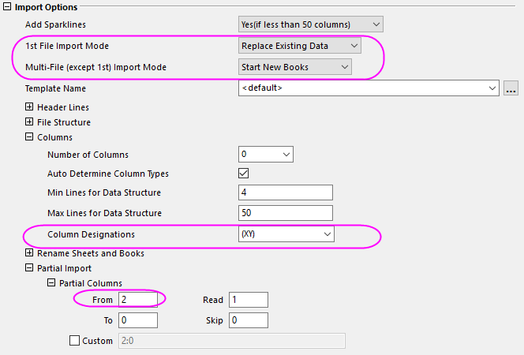
- Aktivieren Sie die Arbeitsmappe mit dem Langnamen Step01.dat und markieren Sie das gesamte Arbeitsblatt. Wählen Sie Zeichnen > Mehrere Felder/Achsen: Gestapelt im Menü, um den Dialog Plotstack zu öffnen. Geben Sie im Zweig Diagrammzuordnung eine 3 für Anzahl der Diagramme in jedem Layer ein, übernehmen Sie die Einstellungen als Standard und klicken Sie auf OK, um ein gestapeltes Diagramm zu erstellen.
- 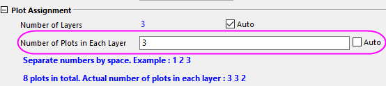
- Entsprechend erstellen Sie zwei weitere gestapelte Diagramme für die beiden anderen Arbeitsmappen. Jetzt haben wir Graph1, Graph2 und Graph3 für die Arbeitsmappen Step01, Step02 bzw. Step03.
- Aktivieren Sie Graph1 und wählen Sie Minitools: Vertikaler Cursor, um den Dialog Vertikaler Cursor zu öffnen. Klicken Sie mit der rechten Maustaste auf den Spaltenheader, um Mappe zu aktivieren. Damit wird eine Spalte "Mappe" in der Datenpunkttabelle hinzugefügt.
- 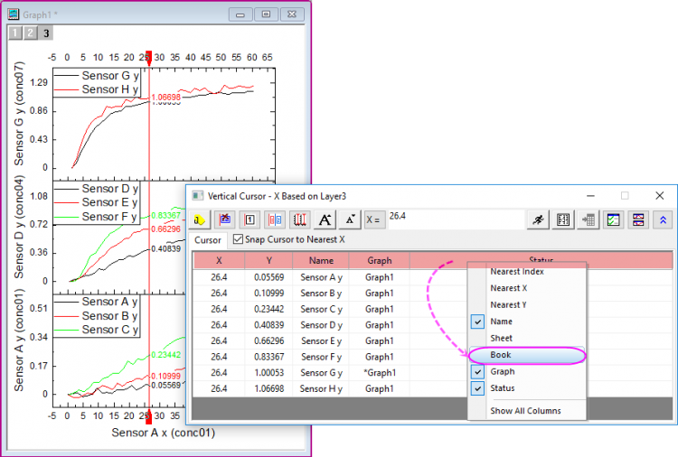
- Klicken Sie auf die Schaltfläche Diagramm verknüpfen/Diagrammverknüpfung aufheben 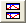 und öffnen Sie den Diagrammbrowser. Sie können wählen, ob ein Diagramm mit dem aktuell aktiven Diagramm verknüpft oder die Verknüpfung aufgelöst werden soll.
- Wählen Sie Graph2 und Graph3 im linken Bedienfeld und klicken Sie auf die Schaltfläche
 , um die zwei Diagramme als verknüpfte Diagramme zu Graph1 hinzuzufügen. Klicken Sie auf OK.
, um die zwei Diagramme als verknüpfte Diagramme zu Graph1 hinzuzufügen. Klicken Sie auf OK.
- 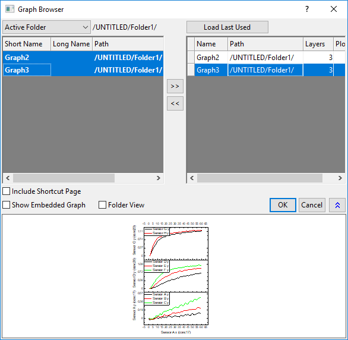
- Hinweis: Sie können in diesem Dialog auch Diagrammverknüpfungen aufheben, indem Sie auf die Schaltfläche klicken, die ein Diagramm aus dem rechten Bedienfeld entfernt.
In der oberen rechten Ecke jedes verknüpften Diagramms wird ein Symbol angezeigt, um darauf hinzuweisen, dass es zu einer Gruppe von verknüpften Diagrammen gehört.
- Stellen Sie sicher, dass Graph1 aktiv und der Dialog Vertikaler Cursor geöffnet ist. Das Sternchen vor dem Diagrammnamen markiert die aktuell aktive Zeichnung, auf der sich der Cursor gerade befindet. Geben Sie 25 als den X-Wert ein, deaktivieren Sie das Kontrollkästchen vor Cursor am nahesten X ausrichten und klicken Sie auf die Schaltfläche Cursor zu X verschieben
 , um die Datenpunkte in jeder Zeichnung zu lesen, wenn X=25.
, um die Datenpunkte in jeder Zeichnung zu lesen, wenn X=25.
- 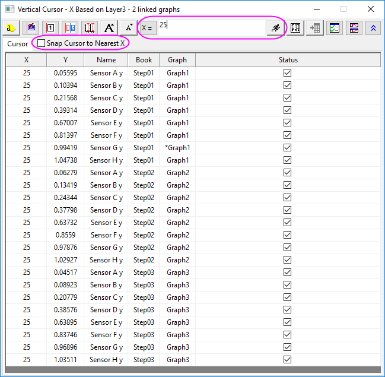
- Klicken Sie auf die Schaltfläche Markierung und Beschriftung hinzufügen , um Markierungen bei X=25 für alle verknüpften Diagramme hinzuzufügen.
- Klicken Sie auf die Schaltfläche Ausgabebericht
 und dann auf die Schaltfläche Zum Berichtsblatt gehen 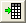, um das Ergebnisblatt zu erzeugen und zu öffnen. Die XY-Koordinaten aller Zeichnungen in verknüpften Diagrammen werden in dem Berichtsblatt aufgeführt. Jedes Mal, wenn Sie auf die Schaltfläche Ausgabebericht klicken, wird eine neue Zeile von Daten im Ergebnisblatt ausgegeben.
und dann auf die Schaltfläche Zum Berichtsblatt gehen 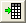, um das Ergebnisblatt zu erzeugen und zu öffnen. Die XY-Koordinaten aller Zeichnungen in verknüpften Diagrammen werden in dem Berichtsblatt aufgeführt. Jedes Mal, wenn Sie auf die Schaltfläche Ausgabebericht klicken, wird eine neue Zeile von Daten im Ergebnisblatt ausgegeben.
- Aktivieren Sie Graph2, klicken Sie auf das Symbol und wählen Sie Cursorlinie hierher verschieben. Die Cursorlinie wird zu Graph2 verschoben.
- Klicken Sie im Dialog Vertikaler Cursor doppelt auf eine Zeile von Graph3, um das Fenster Graph3 zu aktivieren. Klicken Sie auf die zuvor hinzugefügte Markierung und drücken Sie die Taste Entf, um sie zu löschen. Die Markierungen in allen verknüpften Diagrammfenstern werden gelöscht. Um zu Graph2 zurückzukehren, wo der Cursor sich momentan befindet, klicken Sie auf das Symbol und wählen Sie Zum Cursorlinienfenster gehen.
Vertikalen Cursor in einer Grafik mit mehreren Feldern und seitlich nebeneinander angeordneten Layern verwenden
- Erstellen Sie eine neue Arbeitsmappe und wählen Sie Hilfe: Ordner öffnen: Sample-Ordner ... im Menü, um den Ordner "Samples" zu öffnen. Öffnen Sie in diesem Ordner den Unterordner Graphing. Dort befindet sich die Datei Waterfall.dat. Ziehen Sie diese Datei per Drag&Drop in das leere Arbeitsblatt, um sie zu importieren.
- Klicken Sie mit der rechten Maustaste auf die erste Zeile, um die Option Als Langname setzen auszuwählen. Markieren Sie die Spalten col(B)~col(E), um Zeichnen > Mehrere Felder/Achsen: 4-fach auszuwählen. Sie zeichnen das Diagramm mit 4 Feldern, 3 Zeilen und 2 Spalten.
- Klicken Sie auf das erste Feld und wählen Sie Minitools: Vertikaler Cursor. Der Cursor wird zur ersten Spalte der Felder hinzugefügt. Es werden nur die Datenpunkte im ersten und dritten Feld in der Liste angezeigt.
- 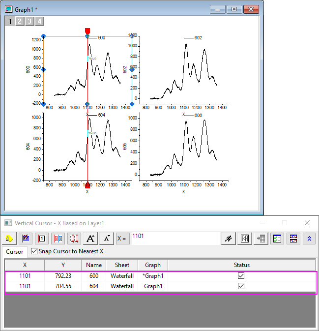
- Wir lesen den Punkt X=1113,31 in allen Layern. Klicken Sie auf die Schaltfläche Verlinkten Cursor für jeden Layer hinzufügen 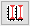, um einen Cursor in alle Layer einzufügen, die miteinander verknüpft sind. (Wenn Sie auf diese Schaltfläche geklickt haben, verwandelt sie sich in die "Paar"-Schaltfläche 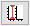, die dazu verwendet werden kann, die Cursor in den verknüpften Layern zu entfernen und zurück zum Anfangsstatus zu gelangen). Geben Sie 1113,31 im Feld X= ein und klicken Sie auf die Schaltfläche Cursor zu X verschieben , um alle Cursor zu diesem X-Wert zu verschieben.
- 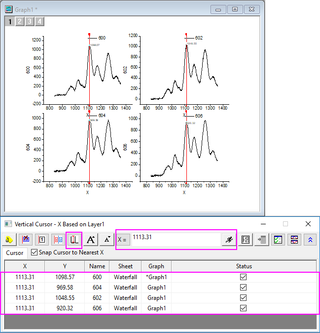
- Klicken Sie auf die Schaltfläche Markierung und Beschriftung hinzufügen , um diese Position in allen Layern zu kennzeichnen. Klicken Sie auf den Cursor in Layer1 und ziehen Sie ihn per Drag&Drop zu den anderen Peaks, um die Datenpunkte in allen Layern zu lesen.
- 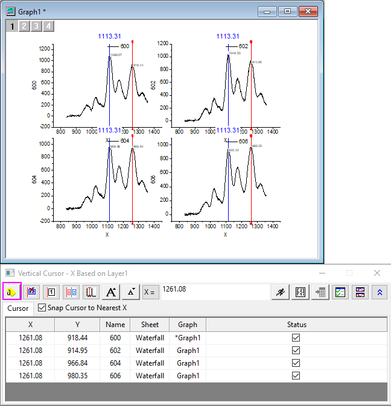
- Sie können jederzeit auf die Schaltfläche Ausgabebericht klicken, um die für Sie interessanten Datenpunkte Zeile für Zeile im Ergebnisblatt auszugeben.